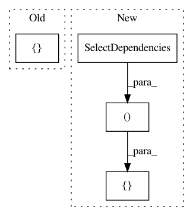

aa3239cf4cebfb6507c2abcdbe7936eb68580f7c,src/python/pants/engine/legacy/graph.py,,create_legacy_graph_tasks,#,214
Before Change
def create_legacy_graph_tasks():
Create tasks to recursively parse the legacy graph.
return [
// Recursively requests LegacyGraphNodes for TargetAdaptors, which will result in a
// transitive graph walk.
(LegacyBuildGraphNode,
[Select(TargetAdaptor),
SelectDependencies(LegacyBuildGraphNode, TargetAdaptor)],
reify_legacy_graph),
]
After Change
def create_legacy_graph_tasks():
Create tasks to recursively parse the legacy graph.
return [
// Recursively requests the dependencies and adapted fields of TargetAdaptors, which
// will result in an eager, transitive graph walk.
(LegacyTarget,
[Select(TargetAdaptor),
SelectDependencies(LegacyTarget, TargetAdaptor, "dependencies"),
SelectDependencies(HydratedField, TargetAdaptor, "field_adaptors")],
reify_legacy_graph),
(HydratedField,
[Select(SourcesField),
SelectProjection(FilesContent, PathGlobs, ("path_globs",), SourcesField),
SelectProjection(Files, PathGlobs, ("excluded_path_globs",), SourcesField)],
hydrate_sources),
(HydratedField,
[Select(BundlesField),
SelectDependencies(FilesContent, BundlesField, "path_globs_list")],
hydrate_bundles),
]
In pattern: SUPERPATTERN
Frequency: 3
Non-data size: 4
Instances
Project Name: pantsbuild/pants
Commit Name: aa3239cf4cebfb6507c2abcdbe7936eb68580f7c
Time: 2016-05-10
Author: stuhood@gmail.com
File Name: src/python/pants/engine/legacy/graph.py
Class Name:
Method Name: create_legacy_graph_tasks
Project Name: pantsbuild/pants
Commit Name: 40c214aa1c044a02b5290aa3ec7cc9570dbe24ad
Time: 2016-11-06
Author: stuhood@gmail.com
File Name: tests/python/pants_test/engine/test_scheduler.py
Class Name: SchedulerTest
Method Name: test_descendant_specs
Project Name: pantsbuild/pants
Commit Name: 40c214aa1c044a02b5290aa3ec7cc9570dbe24ad
Time: 2016-11-06
Author: stuhood@gmail.com
File Name: tests/python/pants_test/engine/test_scheduler.py
Class Name: SchedulerTest
Method Name: test_sibling_specs